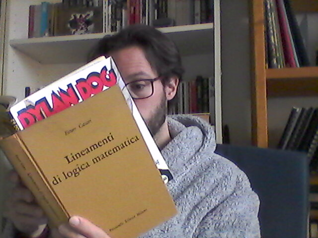

Leonardo Ceragioli's (very retro) Homepage

Short Bio and Research Interests
I am a postdoctoral researcher at the University of Milan.
I obtained my PhD in philosophy at the Universities of Pisa and Florence, with a thesis on pluralism in proof-theoretic semantics.
Then I worked on the PRIN project PUMa at the University of Rome Tor Vergata, investigating criteria for purity and simplicity of proofs.
My main areas of expertise are proof-theory and proof-theoretic semantics for both classical and non-classical logics.
I am also interested in the epistemology of logic, logical disagreement, and applications of logic to computer science.
In Proof-Theoretic Semantics, I've developed systems that allow only single formulas both in assumptions and in conclusions, but where logical terms can be introduced in the scope of other connectives.
I've investigated meaning-dependence between logical terms in these systems and proposed criteria of harmony and separability for them.
Then, I've discussed the possibility of accepting logical pluralism in Proof-Theoretic Semantics and how to reconstruct logical disagreement in this framework.
More recently, I've applied this approach to the investigation of both bilateral systems and modal systems.
From my studies in Proof-Theoretic Semantics and inferentialism, I became interested in the semantic explanation of apriority and its neo-rationalist criticism.
I am currently working under the supervision of Prof. Primiero and my research activity regards probabilistic extensions of typed natural deduction.
Accademic Articles
- Leonardo Ceragioli, Peano's counterexample to Harmony Theoria 85 (6), pp. 459-484. DOI: https://doi.org/10.1111/theo.12217 (2019)
- Leonardo Ceragioli, Ex falso and Proof-Theoretic Validity in Bellotti e Turbanti (ed.) Fourth Pisa Colloquium in Logic, Language and Epistemology, Edizioni ETS (2021).
- Leonardo Ceragioli, New problems for Tennant's definition of harmony Theoria 88 (4), pp. 829-849. DOI: https://doi.org/10.1111/theo.12400 (2022)
- Leonardo Ceragioli, Single-Assumption Systems in Proof-Theoretic Semantics Journal of Philosophical Logic 51, pp. 1019-1054. DOI: https://doi.org/10.1007/s10992-022-09658-4 (2022)
- Valentina Luporini and Leonardo Ceragioli, Intuition is not (always) immediate, and this is good news! Bulletin d'Analyse Phénoménologique XIX Numéro 3 (Actes 13), pp. 180–204. https://popups.uliege.be/1782-2041/index.php?id=1402 (2023)
- Leonardo Ceragioli, Which Ecumenical System for Classical and Intuitionistic Logics? in Bellotti, Moriconi e Turbanti (ed.) Fifth Pisa Colloquium in Logic, Language and Epistemology, Edizioni ETS (2023).
- Leonardo Ceragioli, Bilateral Rules as Complex Rules Bulletin of the Section of Logic 52(3), pp. 329-375. DOI: https://doi.org/10.18778/0138-0680.2023.13 (2023)
Educational Articles
Talks
- Leonardo Ceragioli, Is Logical Disagreement Possible in Inferentialism? Early-career masterclass on Logical Epistemology, University of Bergen (2019)
- Leonardo Ceragioli, Normativity of Logic and Change of Subject ’8th WFAP Graduate Conference (Logic Rulez!?), University of Vienna (2019)
- Leonardo Ceragioli, Peano’s Counterexample to Harmony Second Graduate Conference of the Italian Network for the Philosophy of Mathematics, University Vita-Salute San Raffaele of Milan (2019)
- Leonardo Ceragioli, Meaning-Dependence and Weak Separability in Bilateral Systems Bilateralism and Proof-Theoretic Semantic, Ruhr University Bochum (2022)
- Leonardo Ceragioli and Valentina Luporini, Intuition is not (always) immediate, and this is good news! 6th Creph Annual Seminar 2022: Pick up your eyes: Mediated intuitions and evidence-producing devices, University of Liège (2022)
- Leonardo Ceragioli, Paradossi e revisione della logica: il caso sotto-strutturale Filosofia Analitica Oggi, University of Pisa (2023)
- Leonardo Ceragioli, Semantic Pollution: Explicit, Implicit or Structural? Scuola Normale Superiore of Pisa (2024)
- Leonardo Ceragioli, Semantic Pollution for Modal and Classical Logic University of Florence (2024)
Groups and Projects
Contacts
Send email to leo.crg.uni@gmail.com